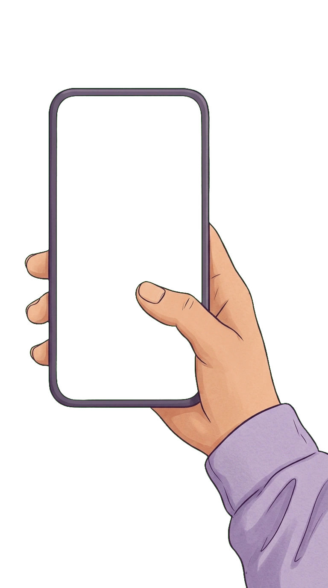

Ponçik seni bekliyor
Bu sabahın
kahramanı sensin.
Alarm çaldı. Evde küçük bir macera,
kapıda tatlı bir inat var.
⌁ Dokun, keşfet, güne uyan.
Hadi. Güzel bir gün
bizi bekliyor!
bizi bekliyor!
Kalan süre01:00
Yatak odasıGün burada başlıyor.
Günaydın! Önce görevine bakalım.
07:30● ▰
uyanbi ✳●
Günaydın!07:30
Ponçik kapıda.
Sabahın seni bekliyor.
Uyanma görevinBir kupa bul.
● Canlı
Nesneye dokun, kadraja al.
Kupayı bulmak için etrafına bak.
Adımların0 / 6
İnternetin yok mu?
Dert değil.

Nesnelere dokunarak telefonunun kadrajına al.